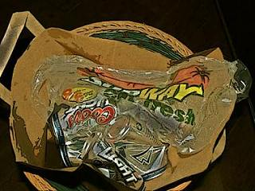

Susan Slaviero
The Empress Remembers Adolescence
I was always the girl they noticed —
a new wave hairstyle, a feather
boa, that tiny tattoo bluing my
wrist with Japanese symbols. I folded
batwings under my bomber jacket,
snuck dark lipstick to school
in my ankle sock. (This story ends
in cracked chrysalis.) These days,
my belly is tight and round—
a pomegranate in autumn full
of red precision. I pluck thorns
in the backyard, paint white
rooms in this suburban two-story,
filling liquor bottles with my strange
milk. My nipples aching
for infants’ beaks. No. Sometimes
I tear dollar bills and hide them in
the junk drawer, twist sepia photographs
into origami cranes and sailboats.
I bury lavender sachets under
my bedroom window hoping to
birth something new into bone.
Some Advice for Living in the Suburbs

Crouch behind the arborvitae.
Listen to the bombs that sizzle
in your neighbors’ mouths.
They want to see
your underwire bra dripping
on the clothesline, an excess
of beerbottles in your trash bin.
You make pasta salad
with radiator noodles
to amuse the children.
Learn how to spar
without knuckles
or bullets; line
up shotglasses on the
picnic table, or find
a trilobite buried
by the swimming pool.
Maybe the newspaper
will write about it.
Local Woman Discovers
Fossil in Her Backyard
accompanied by a grainy
photo — you looking triumphant,
the bones of your chin lifted,
pointing slightly left. Perhaps
someone will bring you a bluebird
heart in a mayonnaise jar
to add to your collection
of curiosities.
Joke about your husband’s
traffic-cop mustache,
hide your own imperfections
with vanilla frosting or
a drizzle of clover honey.
No one needs to know
you put whiskey in your morning
tea, or that you stare
at the blue gas flame under the kettle
for whole afternoons, knowing
your razor blades are dull,
your fridge is dirty, but
your lawn
burns beautifully.
Susan Slaviero lives and writes in a random place just south of Chicago. Her work has appeared in print and online journals: Fourteen Hills, Wicked Alice, Prick of the Spindle, Umbrella Journal, and others. Susan’s chapbook, Apocrypha, is forthcoming from dancing girl press in January of 2009, and she co-edits the online lit zine, blossombones.
|